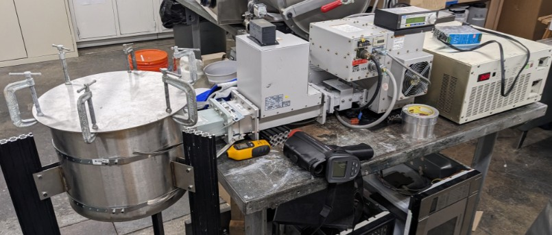

High Power Microwave Systems for Lunar Missions
At the Space Propulsion and Environments Laboratory, I researched high power microwave (HPM) systems applications for future lunar missions. I engineered a technical design and proposal for a lunar recycling system powered by a centralized microwave network.
- High power microwave systems applications for future lunar missions
- Technical design and proposal for a lunar recycling system powered by a centralized microwave network
- ISRU and catalyst integration to recycle plastics into rocket fuel precursors